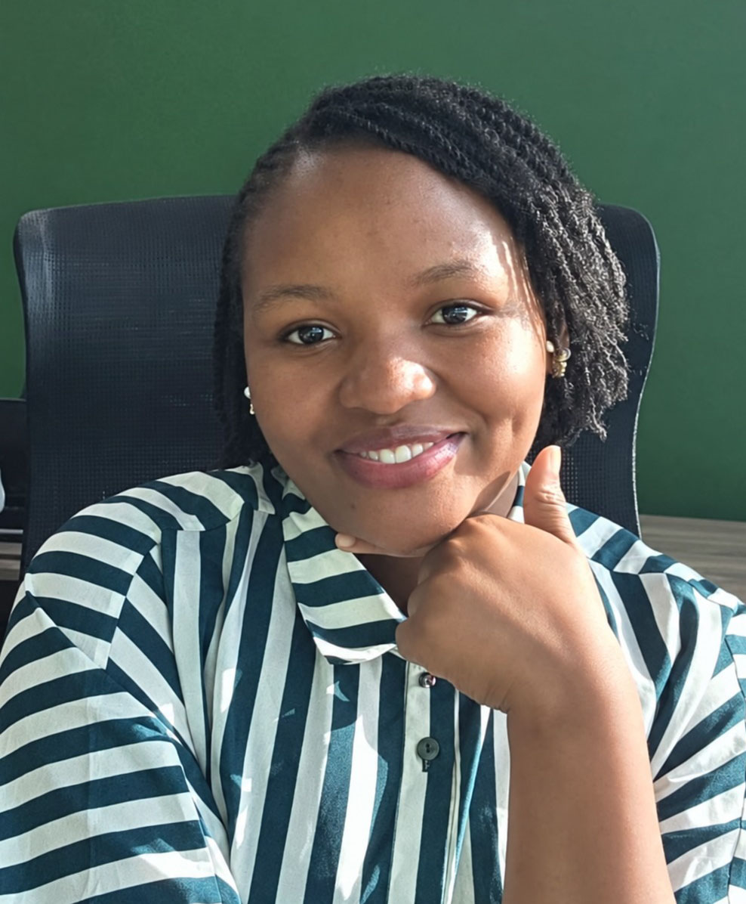
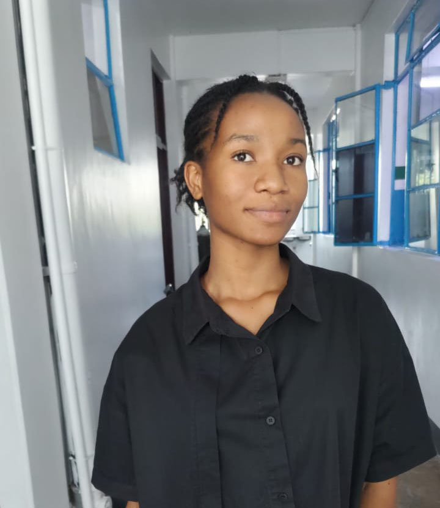

01
Sustainable land management
We promote soil health, land restoration, responsible land use, water conservation, and sustainable farming systems.
Restoring land. Growing futures.
LandRise Africa Initiative is a community-driven environmental and sustainable development initiative restoring degraded land, protecting ecosystems, and strengthening climate-resilient communities across Africa.
Shared responsibility
1 future People and planetOur commitment


Organization overview
LandRise Africa Initiative is a community-driven environmental and sustainable development initiative committed to restoring degraded land, protecting natural ecosystems, strengthening climate resilience, and promoting sustainable food systems across Africa.
Through education, advocacy, community engagement, partnerships, and practical environmental initiatives, we equip people with the knowledge and tools to create sustainable solutions.
Our focus areas
We promote soil health, land restoration, responsible land use, water conservation, and sustainable farming systems.
We support tree planting, ecosystem rehabilitation, biodiversity conservation, and community stewardship of natural habitats.
We connect sustainable agriculture, climate education, resilient food systems, and community adaptation with practical action.
Our approach
We create awareness and involve farmers, young people, institutions, and local stakeholders in sustainable development.
We connect communities, researchers, organizations, government, businesses, and development partners around practical solutions.
Our principles
We share accessible knowledge about sustainable land use, conservation, climate action, and food security.
We bring communities, young people, institutions, and partners into conversations and initiatives that matter locally.
We promote responsible land management and environmental stewardship through public engagement and campaigns.
We collaborate on practical initiatives that restore land, strengthen resilience, and improve community well-being.
Who we bring together
“Farmers and agricultural communities bring lived knowledge and local leadership to sustainable land and food-system solutions.”
“Young people, researchers, and educators help turn knowledge into innovation, leadership, and practical environmental action.”
“Organizations, institutions, and development partners help build the relationships needed for lasting sustainable development.”
Frequently asked
LandRise Africa Initiative welcomes people and organizations who want to learn, collaborate, volunteer, or support practical environmental action.
Our focus includes sustainable land management, environmental conservation, food security, climate action, and youth and community engagement.
Farmers, young people, researchers, environmental professionals, NGOs, community groups, government institutions, businesses, volunteers, donors, and development partners.
You can volunteer, partner on a project, share knowledge, support an initiative, or help advocate for responsible land and environmental practices.
Potential programs include land restoration, tree planting, sustainable agriculture, environmental education, youth climate action, community conservation, and climate resilience.
Why healthy land matters
Healthy soils support productive and sustainable agricultural systems.
Responsible land management helps protect water resources and reduce degradation.
Healthy ecosystems provide habitat for plants, animals, insects, and microorganisms.
Resilient food systems and natural resources can strengthen livelihoods and well-being.
Get involved

Founder & Lead, LandRise Africa Initiative
Leads LandRise Africa Initiative’s vision for sustainable land management, environmental action, and community-centered development.

Community Health and Nutrition Officer
Supports healthier communities through nutrition awareness, community engagement, and practical development initiatives.
Restore land. Empower communities.